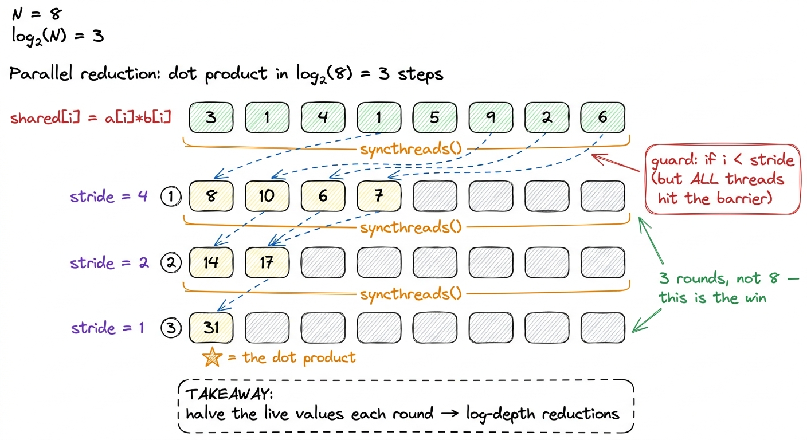
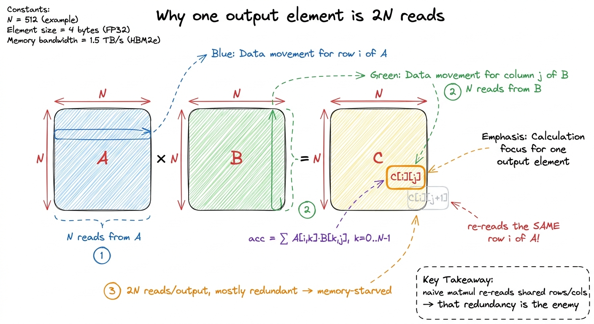
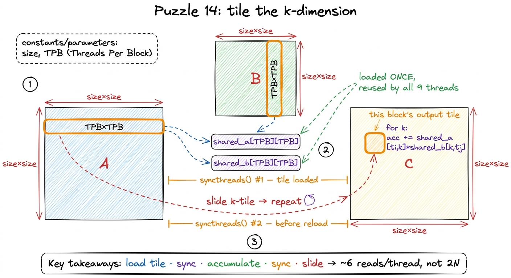
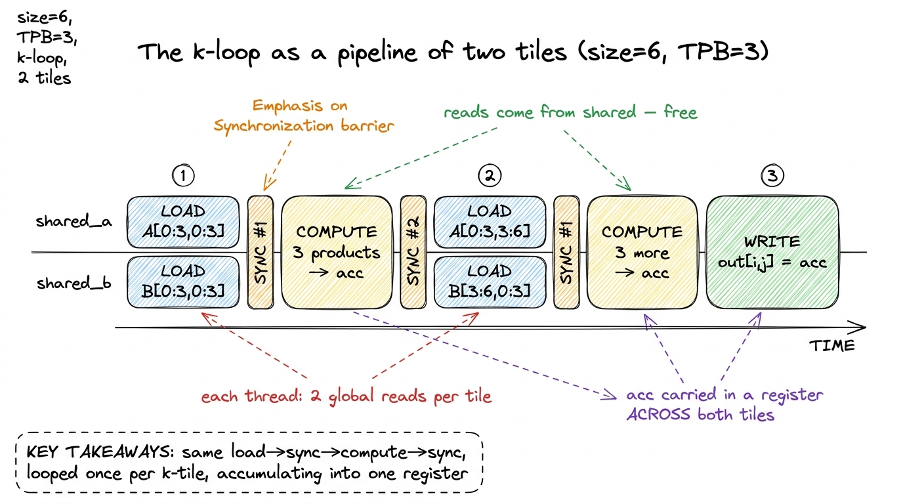
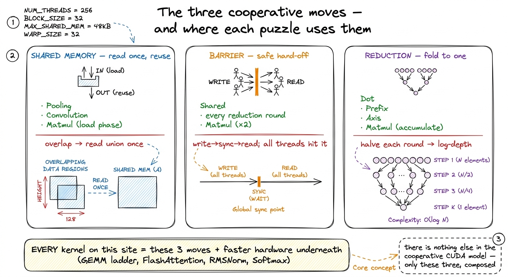

GPU Puzzles, walkthrough II PRACTICE
Here is a question worth sitting with before we write a single line of code: why does a GPU need threads to talk to each other at all? The whole pitch of a GPU is that it has thousands of tiny cores, each running the same program on a different slice of the data. If every core minds its own business — reads its own input, does its own arithmetic, writes its own output — you get the beautiful embarrassingly-parallel picture that makes GPUs fast. So why would we ever want threads to cooperate, and pay the cost of coordinating them?
The answer is the single most important idea in this whole walkthrough, so let me state it up front and then spend the rest of the article earning it: cooperation exists to avoid re-reading memory. Real kernels are almost never limited by how fast the cores can multiply. They are limited by how fast we can feed the cores from memory. And the moment two threads need overlapping pieces of input — which happens in convolution, in reductions, in every matrix multiply — having each thread fetch its own copy from slow global memory is enormous waste. Cooperation is how we fetch the overlap once and share it.
This is the second of two GPU-Puzzles walkthroughs. In the first one every puzzle had the same shape: one thread, one input element, one output element, no conversation. That is the easy half of CUDA — the only skills you need are indexing arithmetic (turning blockIdx and threadIdx into a global position) and a bounds guard so stray threads don't write past the array. This walkthrough covers puzzles 8 through 14 of Sasha Rush's GPU-Puzzles, and every one of them breaks the isolation. Threads have to cooperate: stage data in a shared scratchpad, agree on a barrier so nobody races ahead, and fold many partial results into one.
Here is the promise. There are only three cooperative moves in the entire CUDA programming model — shared memory, barriers, and reductions — and by the end of this article you will have written all three by hand on 8-element toys. Every serious kernel on this site is built from exactly these three moves, including all ten rungs of the GEMM ladder and every variant of FlashAttention. Do them once on toy sizes, where you can watch every element move, and they stop being magic.
1 These puzzles run on a small Python simulator (Numba's CUDA layer), not on real silicon, so there are no timing numbers in this article. That is deliberate — the payoff here is the mental model, not throughput. Once the model is solid we hand it to the GEMM ladder, which does nothing but turn this grammar into measured TFLOP/s. Read __shared__ and syncthreads() fluently first; chase percentages of cuBLAS second.
The one mental model: a shared kitchen counter
Before any code, let me give you the picture I want you to carry through the whole article, because everything hangs on it.
Imagine a block of threads as a small kitchen crew. Global memory — the GPU's main HBM (High-Bandwidth Memory) — is the pantry down the hall. It is huge (an H100 holds 80 GB) but the walk is long: reaching it costs hundreds of clock cycles, and the whole crew shares one hallway, so if everyone walks to the pantry at once they queue up. Now put a counter in the middle of the kitchen. It is small, but it is right there, and everyone in the crew can reach it in a couple of cycles. If one cook walks to the pantry, grabs the flour, and drops it on the counter, every other cook can use that same flour without walking to the pantry. That counter is shared memory.
 figure rendering · The whole point of cooperation: one thread fetches from far-away globa
figure rendering · The whole point of cooperation: one thread fetches from far-away globaHold onto the kitchen. When we get to convolution, the "flour everybody reuses" is the overlapping input window. When we get to matmul, it is a tile of the matrix. The picture never changes — only what sits on the counter.
Where shared memory actually lives
Let me make the counter concrete, because "small and fast" deserves real numbers. Shared memory is a small, on-chip scratchpad that every thread in a block can read and write, and that no other block can see. It is not a separate chip — it is carved out of the same silicon as the L1 cache, right next to the compute cores.
On an H100, that on-chip pool is 256 KiB per Streaming Multiprocessor (SM), and up to 228 KiB of it can be handed to a block as addressable shared memory.2 That 228 KiB is a per-block opt-in, not the default. You request it at launch with cudaFuncSetAttribute(..., cudaFuncAttributeMaxDynamicSharedMemorySize, ...); the classic no-opt-in ceiling is 48 KiB per block. And "228" is itself rounded — the exact usable figure depends on the driver's L1 carve-out granularity. See Shared Memory & L1 for the full breakdown. Compare the walk to each level: a register access is essentially free, shared memory costs a handful of cycles, the L2 cache costs a few dozen, and a trip to HBM costs on the order of 400–800 cycles. That gap — a couple of cycles versus several hundred — is the entire reason cooperation pays. In the puzzle simulator, all of this collapses to a single line: cuda.shared.array(...) gives you a small array declared inside the kernel that the whole block shares.
 figure rendering · The memory hierarchy: shared memory is the fast, per-block level the p
figure rendering · The memory hierarchy: shared memory is the fast, per-block level the pNotice the word hand-manage. Caches (L1, L2) decide for themselves what to keep — you don't control them directly. Shared memory is different: it is a scratchpad you fill and empty with explicit code. That control is exactly what makes it powerful and exactly what makes it easy to get wrong. Which brings us to the barrier.
Puzzle 8 — Shared: the first barrier
Puzzle 8 is deliberately trivial arithmetic — add 10 to every element of a small vector, one block — and yet it is the first puzzle that forces you to touch shared memory and a barrier even though the math doesn't need them. That is the whole point. It is a finger exercise for a pattern you will reuse forever, taught on a problem simple enough that nothing distracts you from the pattern itself.3 The real puzzle uses TPB = 4 with a slightly larger input, precisely so that "more elements than threads" isn't hiding here and you focus on the sync. I'll use TPB = 8 matched to the input below to keep the arithmetic clean; the shape of the solution is identical either way.
The canonical solution is three moves with a barrier wedged in the middle:
def call(out, a) -> None:
shared = cuda.shared.array(TPB, numba.float32)
i = cuda.blockIdx.x * cuda.blockDim.x + cuda.threadIdx.x
local_i = cuda.threadIdx.x
if i < a.size:
shared[local_i] = a[i] # 1. every thread loads its element
cuda.syncthreads() # 2. barrier: wait for ALL loads
if i < a.size:
out[i] = shared[local_i] + 10 # 3. now safe to read sharedLet me slow down on cuda.syncthreads(), because it is the entire lesson. It is a barrier: no thread in the block advances past that line until every thread in the block has reached it. Think of it as the crew agreeing "nobody starts cooking until everyone has put their ingredient on the counter." Why do we need it? Because threads run at wildly different speeds — the scheduler interleaves them, some stall on memory, some race ahead. Without the barrier, thread 5 might reach line 3 and read shared[5] before some slower thread has finished writing its slot on line 1. You'd read whatever garbage was left in that memory. The barrier makes the whole block agree on a checkpoint.
Now the honest caveat, because I promised we'd question the obvious: in this specific puzzle each thread only ever reads the slot it wrote itself (shared[local_i] on line 1 and line 3 are the same slot). So the barrier is technically unnecessary here — no thread reads a neighbor's write. The puzzle makes you write it anyway, and it is right to, because the very next puzzle has threads reading each other's slots, and then the barrier goes from decorative to load-bearing. It is a fire drill for the real fire.
 figure rendering · Shared memory is a per-block scratchpad; the barrier is what makes rea
figure rendering · Shared memory is a per-block scratchpad; the barrier is what makes reaRemember the shape from that figure — load → sync → compute — because it is about to reappear in every remaining puzzle, just with more interesting things happening in the "compute" step.
Puzzles 9 & 11 — Pooling and convolution: the halo pattern
Now we make cooperation earn its keep. Pooling (puzzle 9) asks for a sliding sum of the last 3 elements at each position; 1D convolution (puzzle 11) slides a small weight kernel b (length CONV) across a and takes a dot product at each position. These are the same puzzle wearing different weights — pooling is convolution with weights all equal to 1 — so I'll reason about them together.
The interesting part is the budget baked into the problem. Pooling allows 1 global read and 1 global write per thread. Convolution allows 2 global reads and 1 global write per thread (the extra read is for fetching the weight kernel b). Stop and ask the Socratic question: is that even possible? Each output at position i needs a whole window of inputs — positions i, i-1, i-2 for pooling. That's three reads per output, not one. So how can the budget be one read per thread?
Here is where you feel the overlap. Look at two neighboring threads. Thread i needs the window ending at i; thread i+1 needs the window ending at i+1. Those windows overlap almost entirely — they share two of their three elements. Across the whole block, if every thread independently re-read its full window from HBM, we'd read most elements three times over. But the union of everything the block needs is just the block's slice of a (plus a little more — we'll get to that). If we read that union once into shared memory, every thread can then assemble its window from the counter for free.
 figure rendering · The overlap between neighbouring windows is wasted re-reads in the nai
figure rendering · The overlap between neighbouring windows is wasted re-reads in the naiThere is one subtlety the figure hints at with that orange "HALO" region, and it trips up everyone the first time. A thread near the right edge of the block needs input positions that reach past the block's own slice — its window pokes into the next block's territory. So the shared array has to be a little wider than the number of threads: width TPB + CONV - 1, with those extra CONV - 1 elements called the halo.4 The halo is exactly why real convolution kernels allocate a tile of width TPB + CONV - 1 rather than TPB. The threads that fetch the halo have no output of their own — they exist purely to feed their neighbours. This asymmetry (more loaders than computers) reappears in the GEMM epilogue and in FlashAttention's K/V staging, where a few warps do nothing but stage tiles for the rest. A handful of threads do double duty: they load their own element and one halo element on the far side.
def call(out, a, b) -> None:
shared_a = cuda.shared.array(TPB + CONV - 1, numba.float32)
shared_b = cuda.shared.array(CONV, numba.float32)
i = cuda.blockIdx.x * cuda.blockDim.x + cuda.threadIdx.x
local_i = cuda.threadIdx.x
if i < a.size:
shared_a[local_i] = a[i]
if local_i < CONV: # a few threads fetch the halo + kernel
shared_a[TPB + local_i] = a[i + TPB] if i + TPB < a.size else 0
shared_b[local_i] = b[local_i]
cuda.syncthreads()
if i < out.size:
acc = 0.0
for j in range(CONV):
acc += shared_a[local_i + j] * shared_b[j] # window from shared only
out[i] = accLet me count reads to prove we're inside budget. Each thread does exactly one global read of its own a[i]; the few halo threads do one more; and each thread reads its whole window from shared_a — but shared reads don't count against the global budget, because they never touch HBM. That is the trick in one sentence: we converted many global reads into one global read plus many cheap shared reads.
And notice the shape of the solution: load into shared → syncthreads() → compute from shared. Exactly the pattern from puzzle 8, now doing real work. This little convolution is, no exaggeration, a scaled-down GEMM inner loop: stage a tile, sync, reuse it across many outputs. Hold that thought — it is literally kernel 3 of the GEMM ladder, where the "tile" is a square of A and B instead of a strip of a, and reusing it is what jumps the kernel from single-digit to ~35% of cuBLAS.
Puzzles 10, 12, 13 — dot product, prefix sum, axis sum: the reduction
The convolution kept threads mostly independent — each still produced its own output. Now the threads have to combine their results, and that is the third and final cooperative move: the reduction.
A reduction folds many values into one — a sum, a max, a dot product. The obvious way is serial: one thread loops over all 8 numbers and adds them up. But look at what that wastes — it uses one thread while the other seven sit idle. On a machine whose entire value proposition is parallelism, that is a crime. Can we spread the work?
Yes, with a tree reduction, and the idea is worth deriving carefully because it reappears everywhere. Pair up the values: thread 0 adds thread 4's value, thread 1 adds thread 5's, and so on. After one round, we have 4 running sums instead of 8, and it only took one parallel step, because all four adds happened at the same time. Pair up again: 4 becomes 2 in one step. Again: 2 becomes 1. We started with 8 values and finished in 3 steps — and in general, halving each round means we finish in log₂(n) steps instead of n. For 8 elements, log₂(8) = 3 rounds instead of 8. For a realistic 1024-element block, that's 10 rounds instead of 1024 — a hundred-fold shrink in depth.
Here is the dot product (puzzle 10) — multiply elementwise, then tree-reduce the products:
def call(out, a, b) -> None:
shared = cuda.shared.array(TPB, numba.float32)
i = cuda.threadIdx.x
shared[i] = a[i] * b[i] # elementwise product into shared
cuda.syncthreads()
stride = TPB // 2
while stride > 0:
if i < stride:
shared[i] += shared[i + stride] # add partner `stride` away
cuda.syncthreads() # barrier EVERY round
stride //= 2
if i == 0:
out[0] = shared[0] # thread 0 writes the answerLet me walk the strides by hand for TPB = 8, because seeing it once makes it permanent. Say the products in shared are [3, 1, 4, 1, 5, 9, 2, 6].
stride = 4: threads 0–3 each add the value 4 slots to their right.shared[0] += shared[4]→3+5 = 8. Likewise slots 1,2,3 become1+9=10,4+2=6,1+6=7. The live values are now[8, 10, 6, 7]in slots 0–3.stride = 2: threads 0–1 fold in slots 2–3.shared[0] = 8+6 = 14,shared[1] = 10+7 = 17. Live values[14, 17].stride = 1: thread 0 folds in slot 1.shared[0] = 14+17 = 31. Done.
And 3+1+4+1+5+9+2+6 = 31. Three rounds, answer in slot 0.
Two things about this code are non-negotiable, and both are worth understanding rather than memorizing. First, the barrier goes inside the loop, once per round. Why? Because every round reads what the previous round wrote — round stride=2 reads slots that round stride=4 just updated. If any thread ran ahead into the next round before its partner finished the current one, it would read a half-updated value. Unlike puzzle 8, where the barrier was a fire drill, this is a genuine race: skip it and you get wrong answers, non-deterministically.
Second, look at the guard if i < stride. As rounds progress, fewer threads have work — after the first round, threads 4–7 are done contributing. The guard turns them off. But — and this is the subtle bit — the guard wraps only the add, not the syncthreads(). The retired threads still have to arrive at the barrier, or the barrier deadlocks waiting for threads that will never come. Every thread must reach every barrier, even the ones with nothing to do.
5 On real hardware this exact tree has a famous flaw: shared[i] += shared[i + stride] makes adjacent threads touch strided addresses, which causes shared-memory bank conflicts on the early rounds and serializes accesses that should be parallel. See Bank Conflicts. Production reductions either reverse the direction (start with the largest stride, shrink) or drop into registers for the last 32 lanes using warp shuffles (__shfl_down_sync), skipping shared memory entirely. The puzzle version is the clear version, not the fastest one.

figure rendering · The tree reduction: halve the number of live values every round, one bOnce you see the fold, its two siblings are almost free. Prefix Sum (puzzle 12) is the same tree, but instead of collapsing to a single value it keeps the intermediate partial sums and propagates them outward, so every position ends up holding the sum of everything before it. Axis Sum (puzzle 13) is just this reduction run once per row: cuda.blockIdx.y picks which row a block owns, and each block reduces its row to one output. All three are the same skeleton: elementwise into shared → tree of (guarded add + barrier) → one thread writes out. If you can write the dot product, you can write all three. And this is not a toy detour — a reduction over the feature dimension is the beating heart of RMSNorm, Softmax, and the running max/sum that makes FlashAttention numerically stable.
Puzzle 14 — matmul: all three moves at once
The last puzzle is the whole course compressed into one kernel. Multiply two square matrices, TPB = 3 so each block owns a 3×3 tile, and in the hard variant the matrices are larger than a single block — so one tile of shared memory cannot hold a full row of A or a full column of B. The problem hands you the target directly: 6 global reads per thread.
Let me first make sure we feel why that number is the whole game, because it connects straight to the ladder. In a naive matmul, the output element C[i][j] is the dot product of row i of A with column j of B. If the shared inner dimension is N, that's N reads from A and N from B — 2N global reads per output element. For a big matrix that is thousands of reads per thread, almost all of them redundant, because the thread computing C[i][j+1] re-reads the exact same row i of A that its neighbor just used. This redundancy is precisely why the naive GEMM kernel sits at a pitiful low-single-digit percent of cuBLAS: it is starved for memory bandwidth, re-reading rows and columns it could have shared.

figure rendering · Zooming into a single output cell shows the waste: 2N global reads perThe efficient answer fuses everything from this walkthrough. Each block owns one TPB × TPB tile of the output C. It walks along the shared k dimension one tile at a time: load a TPB × TPB square of A and a TPB × TPB square of B into two shared arrays, sync, accumulate partial dot products for the whole output tile out of shared memory, sync again, then slide to the next k-tile and repeat. The barrier is doubled here for a reason we'll dissect: one after loading, one after computing.
def call(out, a, b, size) -> None:
shared_a = cuda.shared.array((TPB, TPB), numba.float32)
shared_b = cuda.shared.array((TPB, TPB), numba.float32)
i = cuda.blockIdx.y * cuda.blockDim.y + cuda.threadIdx.y # global row
j = cuda.blockIdx.x * cuda.blockDim.x + cuda.threadIdx.x # global col
ti, tj = cuda.threadIdx.y, cuda.threadIdx.x
acc = 0.0
for k0 in range(0, size, TPB): # slide over k, tile by tile
if i < size and k0 + tj < size:
shared_a[ti, tj] = a[i, k0 + tj]
if j < size and k0 + ti < size:
shared_b[ti, tj] = b[k0 + ti, j]
cuda.syncthreads() # tile fully loaded
for k in range(TPB):
acc += shared_a[ti, k] * shared_b[k, tj]
cuda.syncthreads() # done reading before reload
if i < size and j < size:
out[i, j] = accLet me trace it on the smallest concrete case: size = 6, TPB = 3, so the k loop runs twice (k0 = 0, then k0 = 3). Focus on one block, the one computing the top-left 3×3 tile of C.
k0 = 0: the 9 threads cooperatively loadA[0:3, 0:3]intoshared_aandB[0:3, 0:3]intoshared_b. Each thread loads exactly one element of each — 2 global reads.syncthreads(). Then each thread accumulates 3 products from shared:acc += shared_a[ti,0]*shared_b[0,tj] + shared_a[ti,1]*shared_b[1,tj] + shared_a[ti,2]*shared_b[2,tj].syncthreads().k0 = 3: loadA[0:3, 3:6]andB[3:6, 0:3], 2 more global reads each. Sync, accumulate 3 more products, sync.
Two k-tiles × 2 reads = 4 reads for A and B… plus the write of out[i,j]. Add the writes and edge accounting and you land in the ballpark of the 6-reads budget — and, crucially, independent of how big N gets, because every element a block needs is read from HBM once and then reused by all 9 threads in the tile. Compare that to 2N per element in the naive kernel. That single change — reuse through shared memory — is what turns an arithmetic intensity of ~1 FLOP/byte (hopeless, memory-bound) into something the tensor cores can actually be fed.
Now the two barriers. The first (after loading) guarantees no thread starts multiplying on a half-filled tile — thread 0 might finish its load and race into the accumulate loop while thread 8 is still writing shared_a. The second (after computing) guarantees no thread overwrites the tile with the next k-tile's data while some straggler is still reading the current one. Drop either barrier and you get silent numerical corruption, not a crash — the worst kind of bug. This is the exact load → sync → compute → sync rhythm from every earlier puzzle, wrapped in a loop over k-tiles.

figure rendering · Matmul is convolution's halo, the reduction's fold, and the barrier al
figure rendering · The k-loop laid out in time: load a tile, sync, compute into the runni6 The puzzle stops here, at a correct tiled kernel. Real GEMM keeps going for many more rungs: each thread computes a strip then a 2D block of outputs (1D and 2D block-tiling), reads become float4 vectorized loads, tile shapes get autotuned, and finally warptiling maps cleanly onto tensor-core wgmma shapes. That climb from naive to the high-90s percent of cuBLAS is the next section — and every rung reuses shared memory, barriers, and reductions exactly as you just wrote them.
What the cooperative half of the model actually taught
Step back, and the seven cooperative puzzles collapse into one idea repeated at three scales. Let me lay the three moves side by side one last time, because this is the load-bearing summary of the whole walkthrough.
Shared memory turns overlapping reads into on-chip reuse. You saw it stage a strip in Pooling and Convolution, and stage a k-tile in Matmul. The rule of thumb: whenever two threads need overlapping inputs, read the union once into shared and let them share the counter.
Barriers make it safe for one thread to read what another thread wrote. You saw syncthreads() protect the load in puzzle 8, protect every round inside the reduction, and protect both the load and the compute in matmul. The rule of thumb: put a barrier between "someone writes shared" and "someone else reads it" — and make sure every thread reaches every barrier.
Reductions fold many partial results into one in logarithmic depth. You saw the tree in Dot Product, Prefix Sum, Axis Sum, and again as the accumulate phase of Matmul. The rule of thumb: to combine n values, halve the live set each round and finish in log₂(n) steps, one barrier per level.

figure rendering · The whole cooperative half of CUDA on one page: three moves, the puzzlThere is genuinely nothing else in the cooperative half of the CUDA model. Even Hopper's fanciest machinery is these three ideas with better hardware underneath.7 Hopper adds thread-block clusters and distributed shared memory (DSMEM) so blocks on different SMs can read each other's scratchpads, plus asynchronous TMA bulk copies that overlap the "load tile" step with compute instead of blocking on it — and wgmma warpgroup matrix instructions that consume shared-memory tiles directly. But the shape is unchanged: you are still staging tiles, synchronizing, and reducing — just with the loads hidden behind the math. See also double buffering with cp.async, which is precisely the "hide the load behind the compute" idea applied to the matmul k-loop above.
That is the honest bridge to the rest of the site. GPU-Puzzles gave us the grammar on 8-element toys; the GEMM ladder now spends ten kernels turning that grammar into throughput, profiling each rung and letting the bottleneck — not our intuition — pick the next optimization. If you understood why the barrier goes inside the reduction loop, and why the matmul stages a k-tile at a time instead of a whole row, you already understand the skeleton of every kernel that follows. Everything from here is making that skeleton fast.